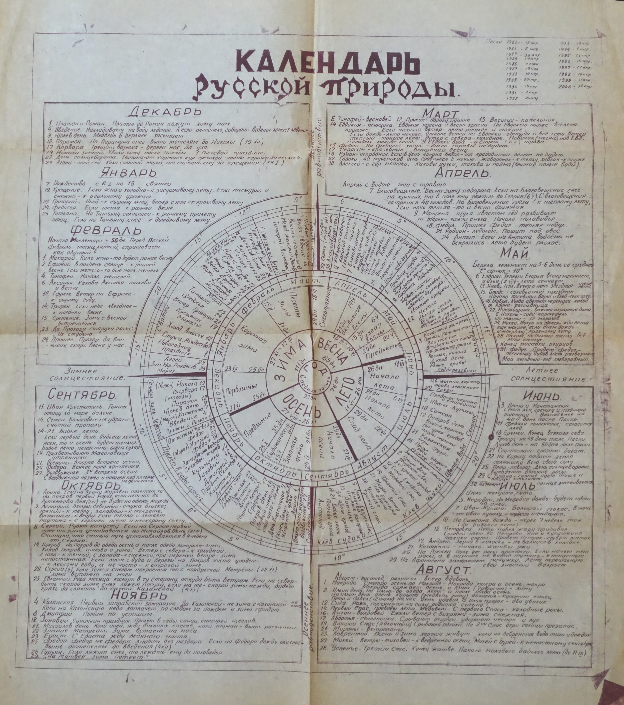
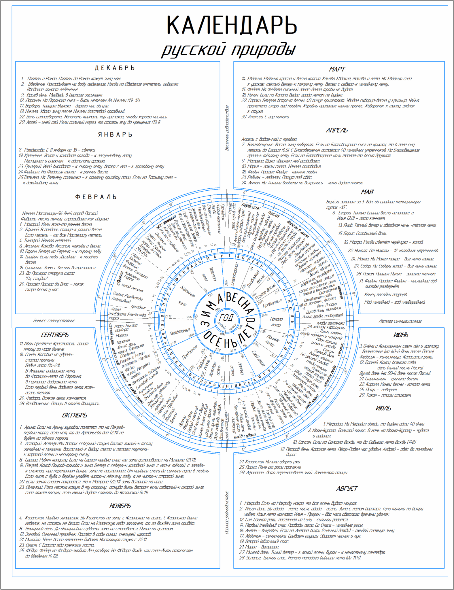

Круговой «Календарь русской природы»:
самиздат без автора
История одного анонимного плаката
Искомая круговая диаграмма «Календарь русской природы» — анонимный самиздатовский плакат, распространявшийся в СССР предположительно в 1970–1980-е годы. Он сочетает народный месяцеслов, православные святцы и фенологические наблюдения в едином круговом представлении года. Несмотря на отсутствие указания автора, плакат имеет явный текстовый первоисточник и встраивается в многовековую традицию круговых природных календарей.
Экспонат из Музея «Мемориал»
Единственный известный архивный экземпляр плаката хранится в фондах Международного общества «Мемориал» и доступен в онлайн-каталоге музея.
Примечательна классификация предмета в музейном каталоге: раздел «Диссидентское движение». На первый взгляд это кажется неожиданным для народного природного календаря. Объяснение, однако, лежит на поверхности: совмещение православных святцев с народными приметами в советском публичном пространстве было идеологически неприемлемо. Любой материал, воспроизводящий религиозную систему отсчёта времени — пусть даже в оболочке фенологии и крестьянского быта, — автоматически оказывался за пределами дозволенного и распространялся неофициально.
Стрижёв как вероятный текстовый первоисточник
Тексты примет на плакате практически дословно совпадают с текстами из книги Александра Николаевича Стрижёва «Календарь русской природы» (1973). Стрижёв — натуралист и фенолог, автор многолетней колонки в журнале «Наука и жизнь» (1966–1982), в которой он публиковал сезонные наблюдения, народные приметы и святцы в том же духе, что и плакат.
Ключевым структурным совпадением является деление года на 14 подсезонов — нетривиальная схема, которая присутствует и у Стрижёва, и на плакате. Вероятнее всего, плакат создан кем-то, кто был знаком с книгой или журнальными публикациями Стрижёва и перевёл линейный текст в круговую форму.
Книга доступна в сети: geoman.ru — А.Н. Стрижёв, «Календарь русской природы».
Традиция круголёта
Круговое представление природного года не является изобретением советского самиздата. Оно уходит корнями в народную традицию так называемого круголёта — кругового месяцеслова, в котором времена года, праздники и природные явления располагаются по кругу, отражая цикличность жизни.
Наиболее древние визуальные воплощения этой традиции — каргопольские вышивки-месяцесловы, на которых двенадцать месяцев обозначены фигурами, занятиями и природными символами, расположенными по кругу. Эта форма бытовала задолго до появления печатных календарей.
В печатном виде круговые природные календари появлялись как минимум дважды до самиздатовского плаката: в 1916 году и в 1948 году. Плакат из «Мемориала» таким образом продолжает устойчивую визуальную и текстовую традицию, которая пережила смену политических режимов.
Галерея



Источники
- Музей «Мемориал», инв. № ОФ4544 — museum.memo.ru/stock/9/6161/
- А.Н. Стрижёв. «Календарь русской природы». М., 1973 — geoman.ru
- А.Н. Стрижёв. Колонка в журнале «Наука и жизнь», 1966–1982 гг.
- Каргопольские вышивки-месяцесловы — народная традиция кругового месяцеслова
- Круговые природные календари 1916 и 1948 гг. (ранние печатные издания)